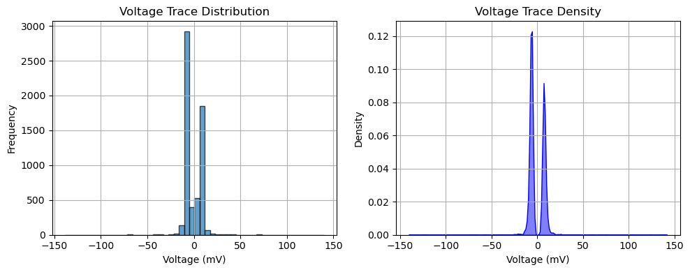
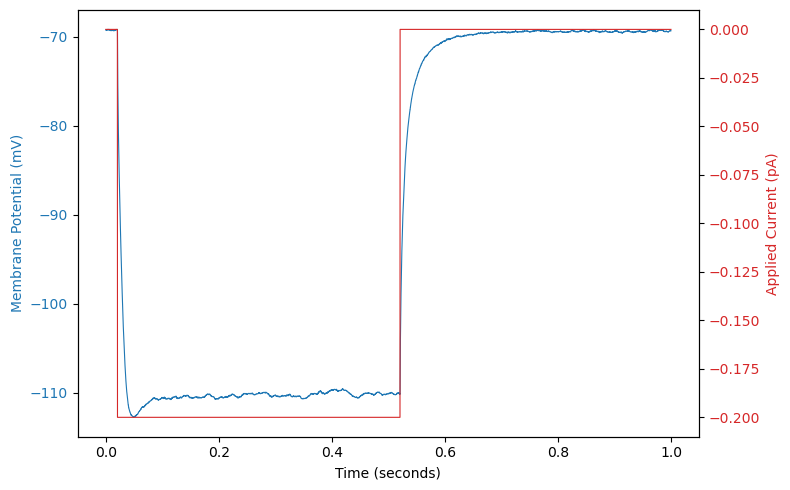
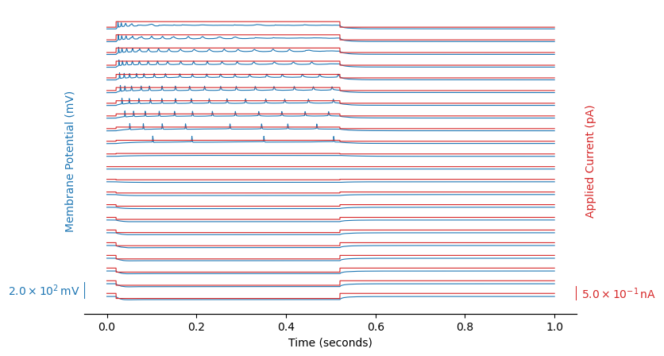

Explore abf files#
Let’s import external libraries:
import numpy as np
import matplotlib
import matplotlib.pyplot as plt
import seaborn as sns
import pyabf
print(f"numpy: {np.__version__}")
print(f"matplotlib: {matplotlib.__version__}")
print(f"seaborn: {sns.__version__}")
print(f"pyabf: {pyabf.__version__}")
numpy: 1.26.4
matplotlib: 3.8.4
seaborn: 0.12.2
pyabf: 2.3.8
from pathlib import Path
records_dir = Path("records")
abf_files = list(records_dir.rglob("*.abf")) # recursive glob
print("the directory ", records_dir, " contains ", len(abf_files)," abf files")
the directory records contains 63 abf files
We focus on specific records:
file_path = "records/2024_07/07.03/07.03/C1/2024_07_03_0020.abf"
print('path to the abf file : ',file_path)
path to the abf file : records/2024_07/07.03/07.03/C1/2024_07_03_0020.abf
we use the pyabf package to load the given record file:
abf = pyabf.ABF(file_path) # we load it
print(abf)
---------------------------------------------------------------------------
ValueError Traceback (most recent call last)
Cell In[4], line 1
----> 1 abf = pyabf.ABF(file_path) # we load it
2 print(abf)
File /opt/anaconda3/envs/python-data-bcam/lib/python3.11/site-packages/pyabf/abf.py:100, in ABF.__init__(self, abfFilePath, loadData, cacheStimulusFiles, stimulusFileFolder)
97 self.stimulusFileFolder = self.abfFolderPath
99 if not os.path.exists(self.abfFilePath):
--> 100 raise ValueError("ABF file does not exist: %s" % self.abfFilePath)
101 self.abfID = os.path.splitext(os.path.basename(self.abfFilePath))[0]
103 with open(self.abfFilePath, 'rb') as fb:
104
105 # The first 4 bytes of the ABF indicates what type of file it is
ValueError: ABF file does not exist: /Users/campillo/Documents/0-git.nosync/data-science-spikes/data/data_patch_clamp_bcam/records/2024_07/07.03/07.03/C1/2024_07_03_0020.abf
Here abf = pyabf.ABF(file_path) creates an abf object that have:
attributes: data stored in the object, and
methods: functions that belong to an object and can be called to perform actions
We can print all the attributes:
print(f"{'File Path:':>20} {abf.abfFilePath}")
print(f"{'File Version:':>20} {abf.abfVersionString}")
print(f"{'Sampling Rate:':>20} {abf.dataRate} Hz")
print(f"{'Total Sweeps:':>20} {abf.sweepCount}")
print(f"{'ADC Channels:':>20} {abf.adcNames}")
print(f"{'DAC Channels:':>20} {abf.dacNames}")
print(f"{'Channel Units:':>20} {abf.sweepUnitsY}")
print(f"{'Experiment Date:':>20} {abf.abfDateTime}")
File Path: /Users/campillo/Documents/2-ressources/data/data_patch_clamp_bcam/records/2024_07/07.03/07.03/C1/2024_07_03_0020.abf
File Version: 2.9.0.0
Sampling Rate: 50000 Hz
Total Sweeps: 10
ADC Channels: ['IN 0', 'Vm_sec']
DAC Channels: ['Cmd 0', 'Cmd 1']
Channel Units: pA
Experiment Date: 2024-07-03 15:08:04.190000
methods = [method for method in dir(abf) if callable(getattr(abf, method)) and not method.startswith("__")]
print("\n".join(methods))
_dtype
_getAdcNameAndUnits
_getDacNameAndUnits
_ide_helper
_loadAndScaleData
_makeAdditionalVariables
_readHeadersV1
_readHeadersV2
getAllXs
getAllYs
headerLaunch
launchInClampFit
saveABF1
setSweep
sweepD
Of course the main parts of the sweep are the recorded signal and the command input:
# Print voltage trace (recorded signal)
print(f"{'Voltage Trace (mV):':>25} {abf.sweepY}")
# Print command input (if available)
print(f"{'Command Input (mV):':>25} {abf.sweepC}")
Voltage Trace (mV): [-6.604 -6.3354 -5.835 ... -5.7983 -5.896 -6.6284]
Command Input (mV): [0. 0. 0. ... 0. 0. 0.]
The abf object contains various attributes and methods that allow you to access metadata and data from the .abf file. Here are some useful attributes and how to call them:
print("List of sweep indexes:", ", ".join(map(str, abf.sweepList)))
List of sweep indexes: 0, 1, 2, 3, 4, 5, 6, 7, 8, 9
sweep_index = 0 # Choose a specific sweep (e.g., first sweep -> index 0)
abf.setSweep(sweep_index)
# Print voltage trace (recorded signal)
print(f"{'Voltage Trace (mV):':>25} {abf.sweepY}")
# Print command input (if available)
print(f"{'Command Input (mV):':>25} {abf.sweepC}")
# Check all available ADC channels (recorded signals)
print(f"{'Recorded Channels:':>25} {abf.adcNames}")
# Check DAC channels (command input signals)
print(f"{'Command Channels:':>25} {abf.dacNames}")
Voltage Trace (mV): [-6.604 -6.3354 -5.835 ... -5.7983 -5.896 -6.6284]
Command Input (mV): [0. 0. 0. ... 0. 0. 0.]
Recorded Channels: ['IN 0', 'Vm_sec']
Command Channels: ['Cmd 0', 'Cmd 1']
Some statistics of 1 sweep#
Here, we have selected sweep_index = 0, representing the first sweep in the ABF file. We then compute some basic statistics of the corresponding voltage trace, such as the mean, median, min, max, standard deviation, and range of the signal:
data = abf.sweepY # The voltage trace for the specific swwep
stats = {
"Mean (mV)": np.mean(data),
"Median (mV)": np.median(data),
"Min (mV)": np.min(data),
"Max (mV)": np.max(data),
"Std Dev (mV)": np.std(data),
"Range (mV)": np.ptp(data), # Max - Min
}
print("\nVoltage Trace Statistics:")
for key, value in stats.items():
print(f"{key:>20}: {value:.3f}")
Voltage Trace Statistics:
Mean (mV): -0.784
Median (mV): -5.103
Min (mV): -138.354
Max (mV): 139.685
Std Dev (mV): 9.269
Range (mV): 278.040
Plotting the voltage trace distribution#
# to avoid warning from Seaborn internally calling a Pandas option
# (mode.use_inf_as_na) that has been deprecated in pandas ≥ 2.1.
import warnings
warnings.filterwarnings("ignore", category=FutureWarning, module="seaborn")
# Create a figure with two subplots (1 row, 2 columns)
fig, axes = plt.subplots(1, 2, figsize=(10, 4))
# Plot histogram on the first subplot
axes[0].hist(data, bins=50, edgecolor='black', alpha=0.7)
axes[0].set_xlabel("Voltage (mV)")
axes[0].set_ylabel("Frequency")
axes[0].set_title("Voltage Trace Distribution")
axes[0].grid(True)
# Plot KDE on the second subplot
sns.kdeplot(data, bw_adjust=0.5, fill=True, color="b", alpha=0.5, ax=axes[1])
axes[1].set_xlabel("Voltage (mV)")
axes[1].set_ylabel("Density")
axes[1].set_title("Voltage Trace Density")
axes[1].grid(True)
# Adjust layout
plt.tight_layout()
color_adcplt.show()
---------------------------------------------------------------------------
NameError Traceback (most recent call last)
Cell In[11], line 26
24 # Adjust layout
25 plt.tight_layout()
---> 26 color_adcplt.show()
NameError: name 'color_adcplt' is not defined

color_adc = "C0"
color_dac = "C3"
my_lw = 0.8
# Create the figure
fig, ax1 = plt.subplots(figsize=(8, 5))
# Plot the recorded curve (ADC) on the left axis
ax1.plot(abf.sweepX, abf.sweepY, color=color_adc, lw=my_lw, label="ADC waveform")
ax1.set_xlabel(abf.sweepLabelX)
ax1.set_ylabel(abf.sweepLabelY, color=color_adc)
ax1.tick_params(axis='y', labelcolor=color_adc)
# Create a second y-axis for the control curve (DAC)
ax2 = ax1.twinx()
ax2.plot(abf.sweepX, abf.sweepC, color=color_dac, lw=my_lw,label="DAC waveform")
ax2.set_ylabel(abf.sweepLabelC, color=color_dac)
ax2.tick_params(axis='y', labelcolor=color_dac)
# Improve the layout
fig.tight_layout()
plt.show()

import pyabf
import matplotlib.pyplot as plt
import numpy as np
file_path = "records/2024_02/2024_02_06_0000.abf"
abf = pyabf.ABF(file_path)
fig, ax1 = plt.subplots(figsize=(8, 5))
n_sweeps = len(abf.sweepList)
# --- ADC scaling ---
all_adc = []
for s in abf.sweepList:
abf.setSweep(s)
all_adc.append(abf.sweepY)
adc_range = np.max(all_adc) - np.min(all_adc)
adc_spacing = adc_range * 1.2
for i, s in enumerate(abf.sweepList):
abf.setSweep(s)
offset = i * adc_spacing
ax1.plot(abf.sweepX, abf.sweepY + offset, color=color_adc, lw=my_lw)
ax1.set_xlabel(abf.sweepLabelX)
ax1.tick_params(axis='y', which='both', length=0)
ax1.set_yticklabels([])
ax1.set_ylabel(abf.sweepLabelY, color=color_adc)
# --- DAC scaling ---
all_dac = []
for s in abf.sweepList:
abf.setSweep(s)
all_dac.append(abf.sweepC)
dac_range = np.max(all_dac) - np.min(all_dac)
dac_spacing = dac_range * 1.2
ax2 = ax1.twinx()
for i, s in enumerate(abf.sweepList):
abf.setSweep(s)
offset = i * dac_spacing
ax2.plot(abf.sweepX, abf.sweepC + offset, color=color_dac, lw=my_lw)
ax2.tick_params(axis='y', which='both', length=0)
ax2.set_yticklabels([])
ax2.set_ylabel(abf.sweepLabelC, color=color_dac)
# --- Helper: nice rounded scale ---
def nice_scale(value):
exp = int(np.floor(np.log10(abs(value)))) if value != 0 else 0
base = value / (10**exp) if value != 0 else 0
if base <= 1:
nice = 1
elif base <= 2:
nice = 2
elif base <= 5:
nice = 5
else:
nice = 10
return nice * 10**exp
# --- Helper: LaTeX style scale label ---
def format_scale_label_latex(value, unit):
if value == 0:
return rf"$0\,\mathrm{{{unit}}}$"
exp = int(np.floor(np.log10(abs(value))))
mant = value / (10**exp)
return rf"${mant:.1f} \times 10^{{{exp}}}\,\mathrm{{{unit}}}$"
# --- Compute scale bars ---
adc_bar = nice_scale(adc_range * 1)
dac_bar = nice_scale(dac_range * 1)
# --- Anchors below first sweep ---
y_anchor_adc = -0.5 * adc_spacing
y_anchor_dac = -0.5 * dac_spacing
x0 = abf.sweepX[0] - (abf.sweepX[-1] - abf.sweepX[0]) * 0.05
x1 = abf.sweepX[-1] + (abf.sweepX[-1] - abf.sweepX[0]) * 0.05
# --- Left (ADC) scale bar ---
ax1.plot([x0, x0], [y_anchor_adc, y_anchor_adc + adc_bar], color=color_adc, lw=1.5)
ax1.text(x0 - 0.01, y_anchor_adc + adc_bar/2,
format_scale_label_latex(adc_bar, abf.sweepUnitsY),
va="center", ha="right", color=color_adc)
ax1.margins(x=0)
# --- Right (DAC) scale bar ---
ax2.plot([x1, x1], [y_anchor_dac, y_anchor_dac + dac_bar], color=color_dac, lw=1.5)
ax2.text(x1 + 0.01, y_anchor_dac + dac_bar/2,
format_scale_label_latex(dac_bar, abf.sweepUnitsC),
va="center", ha="left", color=color_dac)
# remove box spines, keep only bottom (time axis)
for spine in ["top", "left", "right"]:
ax1.spines[spine].set_visible(False)
ax2.spines[spine].set_visible(False)
ax2.margins(x=0)
# keep bottom spine
ax1.spines["bottom"].set_visible(True)
plt.show()
